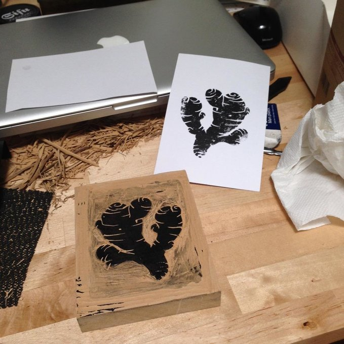
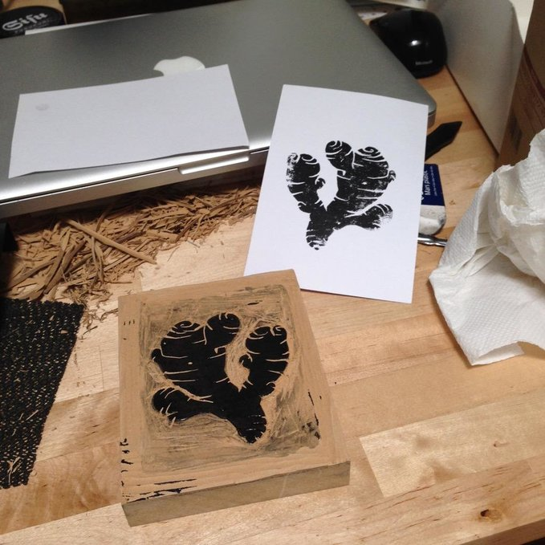

Ginger root series
6X6inch (152x152mm) ink drawings on watercolour paper. Completed in 2015.
Every ginger is unique. My love of the shape and taste of this rhizome has inspired this drawing series. I am happy to say that all of these drawings have found good homes.
Last 3 photos are of a ginger block print I made. I would stamp that image on the gingers I sold off.


 
